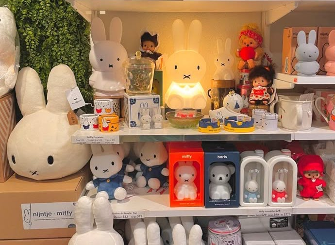
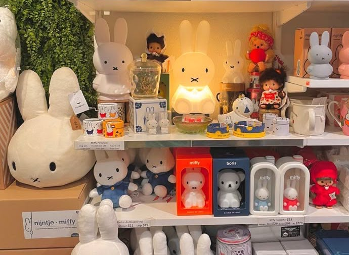

MIFFY
Design:
Dick Bruna
Grazie al look semplice e pulito, la coniglietta Miffy, personaggio classico creato dall’artista Dick Bruna, è una beniamina di grandi e piccini di tutto il mondo da decine di anni.
Il personaggio
Miffy è una coniglietta stilizzata nata nel 1955 in Olanda, ideata dall’artista Dick Bruna. Con i suoi tratti essenziali e l’aspetto rassicurante, è diventata un’icona della letteratura per l’infanzia. Il suo volto semplice — due occhi, una "X" per la bocca — e il corpo tondeggiante comunicano dolcezza, calma e immediatezza.
Oggi Miffy è amata da generazioni di lettori in tutto il mondo, e rappresenta un modello di comunicazione visiva universale.
L'universo e l'ispirazione
Il mondo di Miffy nasce da una filosofia minimalista e profonda.
Dick Bruna si ispirava alla vita quotidiana, ai suoi figli e alla natura per creare storie che parlassero direttamente ai bambini. I suoi disegni si basano su una struttura narrativa lineare, chiara e diretta, che permette ai piccoli lettori di identificarsi facilmente con la protagonista.
Ogni illustrazione si concentra su pochi elementi: una stanza, un oggetto, una situazione. Non c’è nulla di superfluo. Questa semplicità apparente è in realtà il risultato di un processo molto rigoroso, dove ogni dettaglio viene scelto con cura per stimolare l’immaginazione e il coinvolgimento emotivo.


Stile grafico e colori
La cifra stilistica di Bruna è inconfondibile: contorni neri spessi e netti, colori pieni e mai standardizzati, e una palette limitata e distintiva composta principalmente da rosso, blu, giallo, verde, nero.
Ogni tonalità viene miscelata a mano per ottenere sfumature originali.
La composizione delle immagini è rigorosa: le forme sono geometriche, i volumi ben definiti, e tutto è posizionato su sfondi neutri.
Anche la tipografia segue le stesse regole: caratteri sans-serif, nessuna maiuscola, assenza di punteggiatura inutile.
Il risultato è una coerenza grafica che rende Miffy immediatamente riconoscibile.


Filosofia e personalità
Bruna credeva che l’onestà visiva fosse fondamentale nel rapporto con i bambini. Miffy e i suoi amici non vengono mai rappresentati di profilo: guardano sempre frontalmente o, al massimo, di spalle, per creare un contatto diretto con il lettore.
Questo sguardo frontale costruisce empatia e trasmette fiducia.
Ogni personaggio vive in un mondo semplice e armonico, dove le emozioni sono espresse attraverso pose, colori e piccole variazioni nelle espressioni.
La calma e la coerenza dell’universo Miffy lo rendono rassicurante e poetico, adatto a stimolare la fantasia senza distrazioni.
Design applicato
Lo stile Miffy è stato declinato in una vasta gamma di prodotti di design, mantenendo sempre intatta la filosofia originaria.
- Le borracce in silicone hanno linee morbide, colori pastello e sono progettate per essere utilizzate da tutte le età.
- La bigiotteria è elegante ma giocosa, realizzata con forme minimaliste che riflettono il carattere ottimista della mascotte.
- Le tazze in ceramica presentano silhouette essenziali e illustrazioni sobrie, spesso con una sola figura e sfondo bianco.
- Le penne con corona sono oggetti funzionali e simbolici, in cui piccoli dettagli evocano il mondo gentile di Miffy.
 
